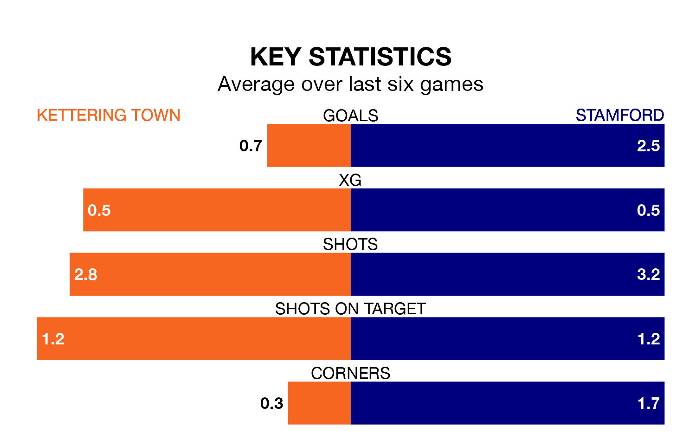

Stamford are strong favourites to take all three points despite Kettering Town's home advantage in Saturday's match at Latimer Park.
*Betting Company* are offering odds of 1.8 on Stamford sealing the win, with the visitors sitting seventh in Southern League Premier Central table.
Kettering, who are 20th in the league and 18 points behind Stamford, are priced at 3.25 to win. A draw is set at 4.
With 52 goals in 25 games so far this season, Stamford are the league's third-highest scorers with 2.1 goals per game. But they are conceding more than average too, letting in 40 goals at a rate of 1.6 per game.
Kettering, meanwhile, are below average scorers, with 1.3 goals per game, compared to a league average of 1.5. They have conceded 2.2 goals per game.
Town are in bad form in Southern League Premier Central, with one win and five losses from their last six games.
With two wins and three draws over that period, the away team's form is much better – they have taken nine points from 18, compared to the Poppies' three.
Kettering's last match was on January 13, a 2-1 loss against Stourbridge.
Stamford drew 2-2 with Redditch United last time out, also on January 13.
Updated: 10:02 (UTC), 19/01/24